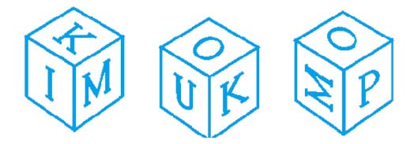
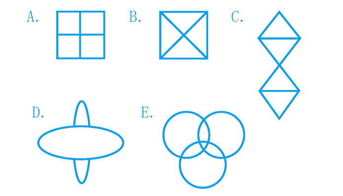
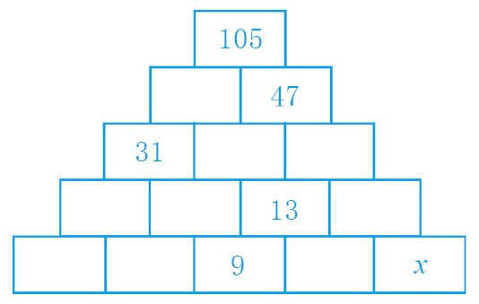
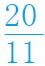

暖身趣味十题
你连11岁的孩子都不如吗？
游戏规则：不得使用计算器！
（1）下图给出了同一个立方体的三个不同视角。与U相对的那一面应该是哪个字母？

A. I B. P C. K D. M E. O
（2）匹诺曹的鼻子长5厘米，他每撒一次谎，鼻子的长度就会加倍。撒谎9次后，他的鼻子大致跟下面哪一个物体的长度差不多？
A. 多米诺骨牌 B. 网球拍 C. 斯诺克球桌 D. 网球场 E. 足球场
（3）单词“thirty”（30）有6个字母，而30 = 6×5。同样，单词“forty”（40）有5个字母，而40 = 5×8。下面哪个数字不是单词字母个数的倍数？
A. six（6）B. twelve（12）C. eighteen（18）D. seventy（70）E. ninety（90）
（4）艾米、本和克里斯正在排队。如果艾米站在本的左侧，克里斯站在艾米的右侧，那么下面哪个说法是正确的？
A. 本站在最左边 B. 克里斯站在最右边 C. 艾米站在中间 D. 艾米站在最左边 E. A、B、C、D都不对
（5）下面哪个图形可以在笔尖不离开纸而且线条不重复的情况下一笔画成？

（6）354 972除以7，余数是几？
A. 1 B. 2 C. 3 D. 4 E. 5
（7）一个家庭有若干孩子，每个孩子都至少有一个兄弟和一个姐妹。那么，这家至少有几个孩子？
A. 2 B. 3 C. 4 D. 5 E. 6
（8）987 654 321乘以9，得数中一共有几个8？
A. 1 B. 2 C. 3 D. 4 E. 9
（9）在下面这个未完成的金字塔图形中，每个矩形中的数字都是下方两个相邻矩形中的数字之和。请问，x代表的是几？

A. 3 B. 4 C. 5 D. 6 E. 7
（10）把分数
写成循环小数，这个小数中包含多少个不同的数字？
A. 2 B. 3 C. 4 D. 5 E. 6